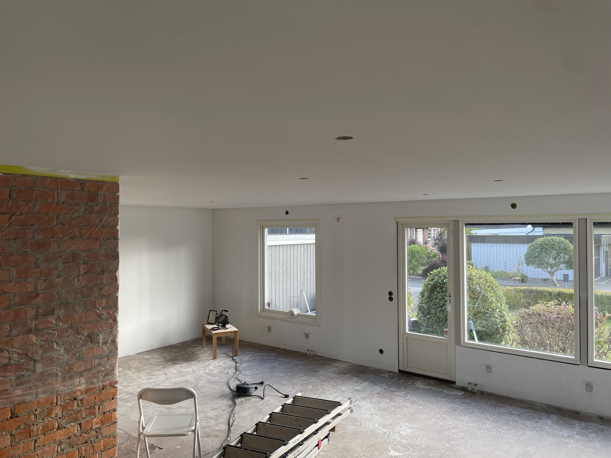
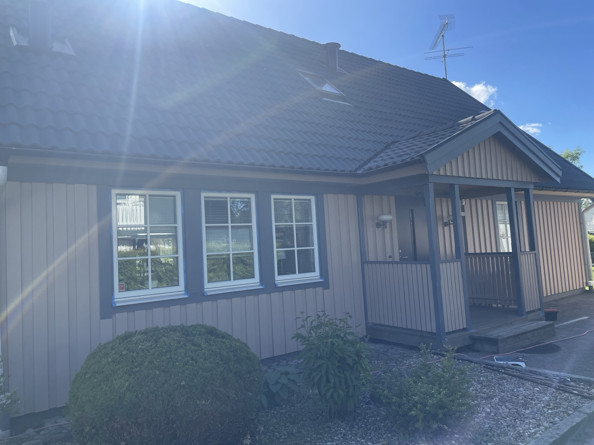
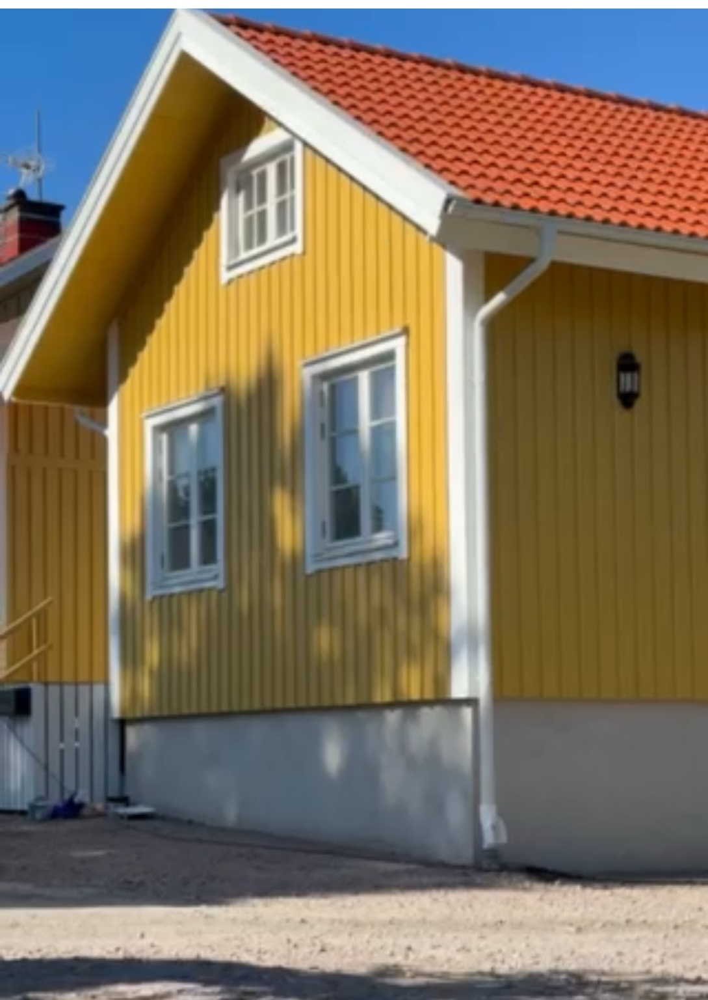
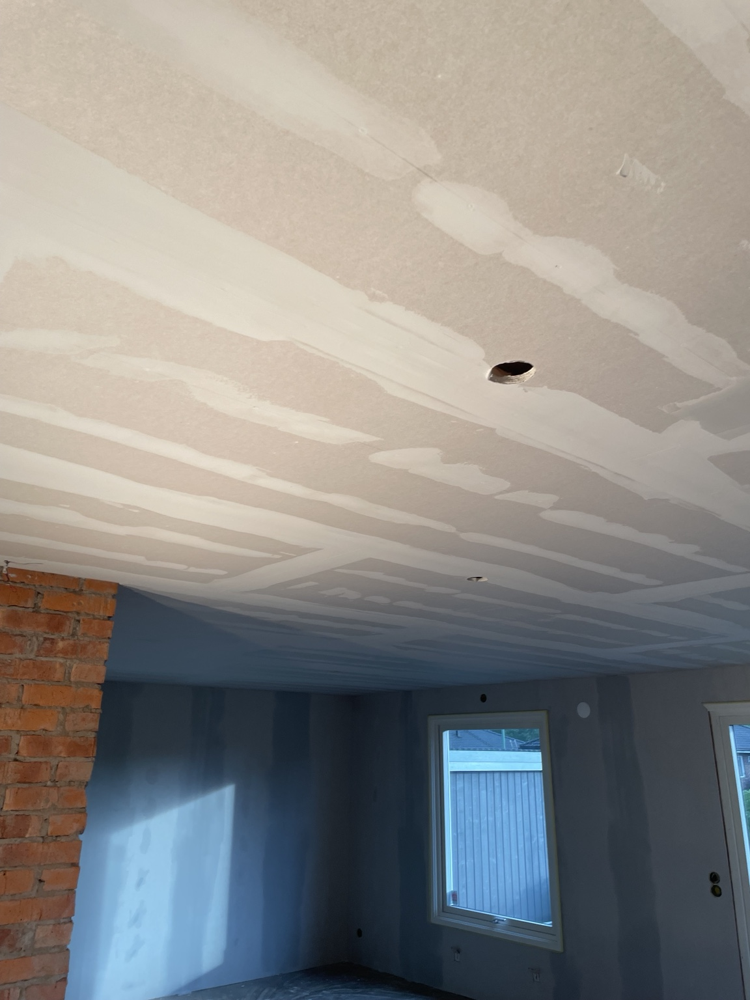

Invändig målning
Väggar, tak, snickerier och rum som behöver få nytt liv. Vi skyddar ytorna och arbetar noggrant från start till mål.
Fråga om invändig målning →Målagården
Målning för privatpersoner, företag och bostadsrättsföreningar i Värnamo med omnejd.
Berätta om ditt projekt

Väggar, tak, snickerier och rum som behöver få nytt liv. Vi skyddar ytorna och arbetar noggrant från start till mål.
Fråga om invändig målning →
Fasader, vindskivor, foder och detaljer. Vi går igenom huset och rekommenderar rätt åtgärd innan arbetet börjar.
Fråga om fasadmålning →
Underarbetet räknas
Gipsning, spackling och slipning kan ingå när ytor behöver jämnas till inför målning. Det syns i slutresultatet.
1 Berätta vilka ytor du vill få målade.
2 Skriv var arbetet ska göras.
3 Skicka gärna bilder på ytan.